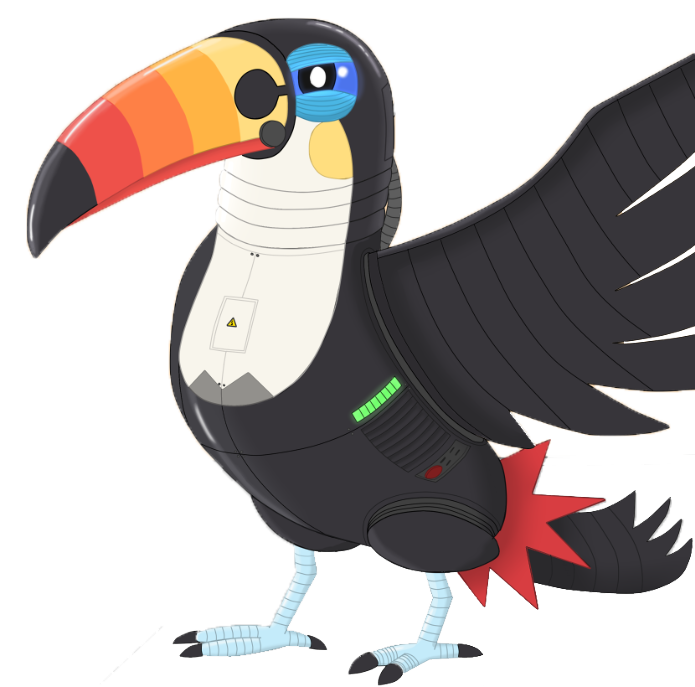

Support requests shouldn't be handled through Slack's direct messages.
Image about someone asking silly questions and the workplace admin asking him/her to open a support ticket so other admins could look into the issue.

You can add RoboToucan to your Slack workplace by scrolling down or clicking here

Your users can open a ticket by typing /ticket and their message into the chat field

Once you or another admin solved their problems you can type /ticket close #id to close the ticket
RoboToucan allows Slack teams to manage their support tickets 100% inside Slack, without having to switch between different apps.
 Add to
Slack
Add to
Slack
... so you don't need to go back and forth with another app.